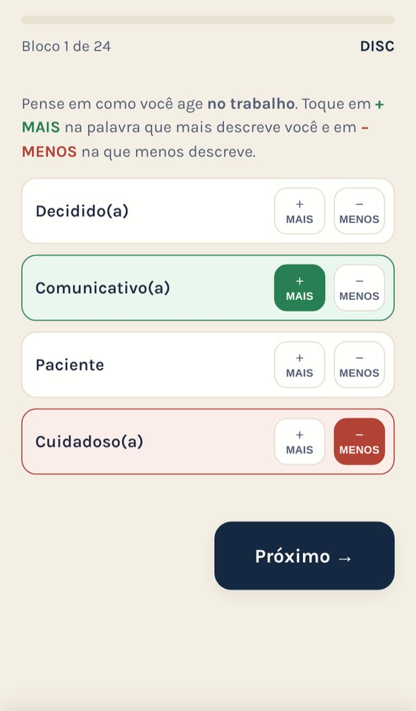
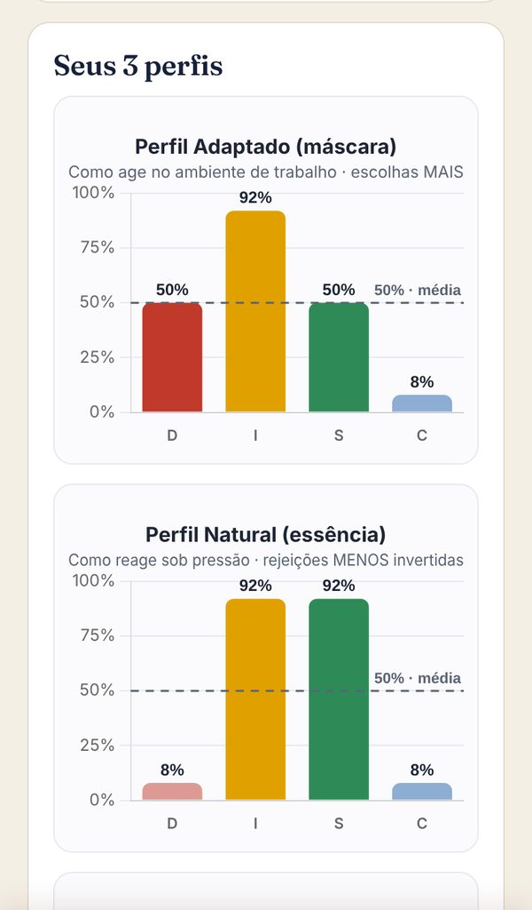
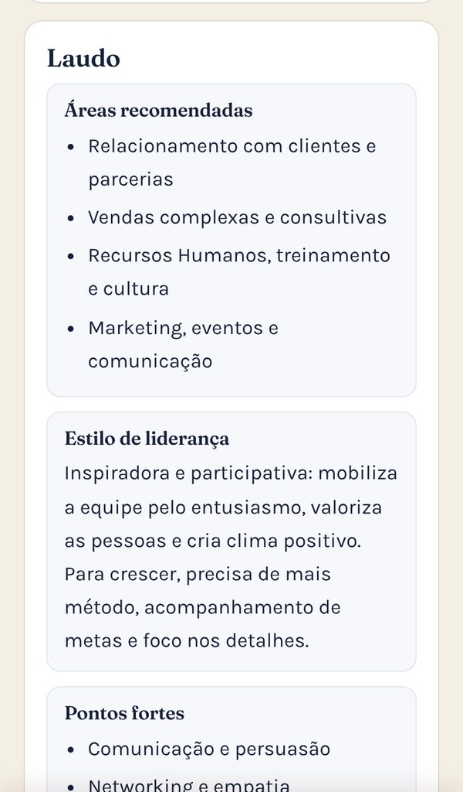

Mostre a empresas e profissionais como cada pessoa age no trabalho, em 3 perfis e um laudo pronto.
Uma avaliação DISC na sua página, com o seu nome e a sua foto: 24 blocos de escolha forçada, os perfis Adaptado, Natural e Resultante em gráficos, laudo com áreas recomendadas e estilo de liderança, relatório em PDF e uma apresentação comercial para vender o seu trabalho. Já tem outro teste na sua página? O DISC entra na mesma página.
O DISC não é ferramenta terapêutica
É uma análise comportamental para o ambiente de trabalho: mostra como a pessoa tende a agir diante de desafios, pessoas, ritmo e regras. Serve para seleção, montagem e desenvolvimento de equipes, liderança e vendas. Não é teste psicológico, avaliação clínica nem diagnóstico, e não deve ser o único critério de uma contratação. Você oferece como serviço de análise comportamental para empresas e profissionais.
A empresa sente o problema, mas não sabe nomear
- O vendedor bom de relacionamento não fecha, e o que fecha desgasta o cliente.
- O líder cobra do mesmo jeito pessoas que funcionam de jeitos opostos.
- A contratação é feita no feeling, e o erro custa meses e dinheiro.
- Você quer oferecer esse diagnóstico, mas montar relatório e gráfico na mão leva horas.
O DISC entrega o perfil, os gráficos, o laudo e o convite para a devolutiva. Você conduz o trabalho com a empresa.
Tudo o que você recebe, em 5 telas
Estas são as telas reais da avaliação, com uma pessoa fictícia.
24 blocos de escolha forçada
Em cada bloco, 4 palavras. A pessoa marca a que MAIS a descreve e a que MENOS a descreve no trabalho. Cada palavra está ligada a um dos fatores D, I, S e C, sem que ela perceba. Sem escala de 1 a 5: não dá para "ficar no meio". Leva de 8 a 12 minutos, no celular.
Método ipsativo: respostas mais honestas, menos "politicamente corretas".

O perfil predominante, na hora
Dominância, Influência, Estabilidade ou Conformidade: o fator mais alto vira o perfil predominante, com resumo, estilo (ex.: DI, SC) e a intensidade de cada fator, Alto ou Baixo.
A pessoa se reconhece no resultado e quer saber mais.
3 perfis em gráficos, com a linha média de 50%
Adaptado (máscara: como age no trabalho, pelas escolhas MAIS), Natural (essência: como reage sob pressão, pelas rejeições MENOS invertidas) e Resultante (a média dos dois). Mais um gráfico radar com a intensidade nos 4 fatores.
A diferença entre máscara e essência mostra o esforço que a pessoa faz no trabalho.

Laudo profissional e PDF
Resumo do perfil, áreas recomendadas (ex.: vendas agressivas e liderança de crise para D; relacionamento, vendas complexas e RH para I; sucesso do cliente e operações para S; administração, finanças, tecnologia e qualidade para C), estilo de liderança, pontos fortes, pontos de atenção, como se comunicar e o que motiva. Tudo num PDF com capa.
Um laudo que a empresa entende e usa no mesmo dia.

Você conduz pela sua área, e vende o seu serviço
Gere códigos e envie o link pelo WhatsApp com a mensagem pronta. Veja todas as avaliações, abra os gráficos e o laudo, baixe o PDF, envie por e-mail e gere uma apresentação comercial com a proposta de desenvolvimento para a pessoa ou para a empresa. Exporte tudo para planilha.
Do resultado à proposta em minutos.
Feito para quem atende empresas
- Cronômetro de 60 segundosNo fim, a pessoa tem 60 s para falar com você no WhatsApp; você vê quem clicou.
- Aviso por e-mailA cada avaliação respondida, chega um e-mail com os 3 perfis.
- Você decide se a pessoa vê o resultadoOu só você vê e entrega na devolutiva.
- Cálculo conferido no servidorO resultado é recalculado no banco, sem depender do aparelho da pessoa.
- Exportar para planilhaOs 3 perfis de todas as pessoas, em um arquivo.
- Aceite de privacidade (LGPD)A pessoa concorda antes de começar.
Sem o DISC
- Contratação no feeling
- Relatório montado na mão
- Proposta comercial do zero
- Resultados espalhados
Com o DISC
- 3 perfis e laudo em minutos
- PDF pronto para a empresa
- Apresentação comercial em um toque
- Tudo na sua área, com planilha
Uma única análise vendida já paga o ano inteiro
R$ 97 /ano
Menos de R$ 0,27 por dia · renovação anual
Perguntas frequentes
O DISC é uma ferramenta terapêutica ou um teste psicológico?
Não. É uma análise comportamental para o ambiente de trabalho. Mostra tendências de comportamento em quatro fatores (Dominância, Influência, Estabilidade e Conformidade). Não é diagnóstico, avaliação clínica nem terapia, e não deve ser o único critério de uma decisão de contratação.
Para quem eu posso oferecer?
Para empresas (seleção, equipes, liderança e vendas) e para profissionais que querem entender o próprio jeito de trabalhar. Você oferece como serviço de análise comportamental e devolutiva.
O que são os perfis Adaptado, Natural e Resultante?
Adaptado é como a pessoa age no trabalho (as palavras que ela marcou como MAIS). Natural é como ela reage sob pressão (calculado pelas palavras que ela rejeitou como MENOS: quanto menos rejeita um fator, mais alto ele fica). Resultante é a média dos dois. Acima de 50%, o traço é Alto; abaixo, Baixo.
Preciso ter outro teste?
Não. Se você ainda não tem página de teste, depois do pagamento você monta a sua em 2 minutos, só com o DISC. Se você já tem uma página, entre com a sua conta: o DISC entra na mesma página, no mesmo link.
A pessoa vê o resultado?
Você escolhe ao gerar cada código: a pessoa vê os perfis e baixa o PDF na hora, ou só você vê e entrega a devolutiva.
Como pago a renovação?
A assinatura é anual. Você recebe um e-mail 5, 4, 3, 2 e 1 dia antes do vencimento, no dia e 5 dias depois, com o link para renovar.
Posso cancelar?
Pode. É só falar com o Mauricio pelo WhatsApp antes da renovação.